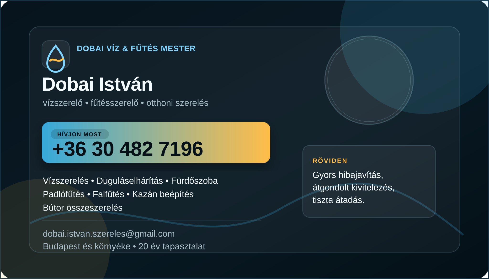

Vízszerelés
Csap, WC, csőtörés, mosogató és gépbekötés.
Részletek20 év tapasztalat Budapesten és környékén
Gyors javítás sürgős helyzetben, átgondolt kivitelezés felújításnál: fürdőszoba, padlófűtés, falfűtés, kazán beépítés és bútor összeszerelés korrekt, tiszta munkával.
Csap, WC, csőtörés, mosogató és gépbekötés.
RészletekMosogató, fürdő és WC dugulások gyors kezelése.
RészletekKiállások, szaniterek, zuhanyzó és kád előkészítés.
RészletekFűtési körök, rejtett hőleadás, kazánhoz illesztve.
Összes szolgáltatásKazáncsere, melegvíz és fűtési rendszer kapcsolat.
RészletekFürdőszobai szekrények, polcok és otthoni elemek.
RészletekNévjegy
A fő elérhetőség azonnal látszik, a szolgáltatások pedig röviden összefoglalják, miben kérhet segítséget.

Miért működik?
Víz, fűtés, fürdőszoba és kazán esetén minden mindennel összefügg. A jó munka nem csak megold egy hibát, hanem később is nyugodtan használható rendszert ad.